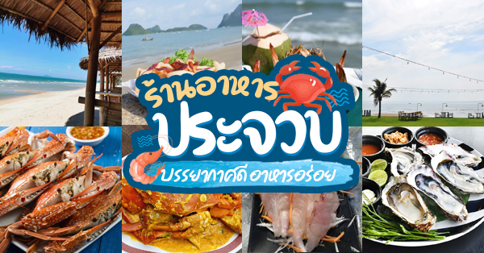
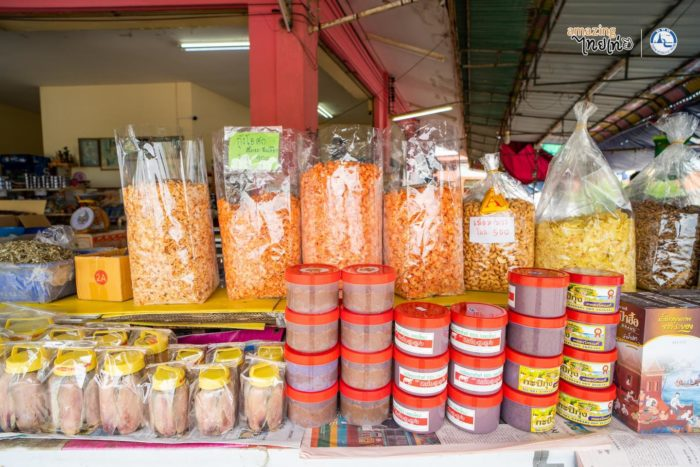

อาหารและของฝาก
อาหารพื้นถิ่น

เมนูเด่นของชุมชน: อาหารทะเลสดริมอ่าวประจวบ (ปูม้านึ่ง กุ้งเผา หมึกแดดเดียว) และขนมจีนน้ำยาปูรสเด็ด
จุดหาซื้อ: สามารถหาซื้อและรับประทานได้ตามร้านอาหารริมชายหาดอ่าวประจวบ และตลาดโต้รุ่งในตัวเมืองประจวบคีรีขันธ์
ของฝากจากชุมชน

ผลิตภัณฑ์ท้องถิ่น: สับปะรดกวน สับปะรดอบแห้ง อาหารทะเลแปรรูป (ปลาหมึกแห้ง กะปิเคยแท้) และงานหัตถกรรมจากเปลือกหอย
จุดจำหน่าย: ร้านค้าของฝากริมถนนเพชรเกษม และร้านค้าชุมชนบริเวณถนนคนเดินอ่าวประจวบ (วันศุกร์–เสาร์)